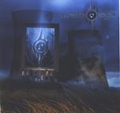

| Artist: | Mind's Eye |
| Title: | A Work Of Art |
| Label: | Rising Sun 312.5004.2 |
| Length(s): | 65 minutes |
| Year(s) of release: | 2002 |
| Month of review: | [05/2002] |
| 1) | Prologue - Lullaby | 0.50 |
| 2) | Courage Within | 5.54 |
| 3) | A Moment Of Honor | 4.52 |
| 4) | Roll The Dice 4.26 | |
| 5) | Room With A View | 1.57 |
| 6) | Shallow Water | 4.50 |
| 7) | My Kindred Soul | 6.09 |
| 8) | The Shape Of Salvation | 6.14 |
| 9) | These Open Arms | 5.56 |
| 10) | An Eye For And Eye | 5.20 |
| 11) | Hands Of Time | 6.27 |
| 12) | Your World | 5.08 |
| 13) | Epilogue - Domino | 7.11 |
A Moment Of Honor has a gentler feel to it, largely due to the use of acoustic, next to electric guitar, although the harmonies do help as well. Once again a song well-crafted, with all imstruments working together at great effect.
Roll The Dice has the feeling of a ballad, being quite laid back and gentle, but also because of its traditional verse-chorus-bridge build up. It steers away from getting sappy though, making it a pretty good, although non striking track.
The Room With A View is in a hospital, in which the protagonist has landed after the car crash featured at the start of the track. This a slow piano vocal track with a rather intimate feel.
Shallow Water again shows the harmonies supporting a strong melody. This is a strong melody with a compelling twist in it.
My Kindred Soul features a vocal melody supported by friendly keys, giving it a laid back feel. The uncoming of guitar and the somewhat slick rounding give this track a bit of a poppy feel. Not a bad track, but not all that interesting either.
The Shape Of Salvation is a bit of a power rock track. With flashy and spacy keys and guitars, which unfortunately overshadow the strong melody of the track. The acoustic ending of the track has something of a coda that could just as well have been a separate track.
These Open Arms is the kind of track in which he's trying to win her back after slipping up. Despite this seedy set up, they manage to come up with a track that has all the integrity necessary to salvage the subject and come up with a strong enough song, albeit not exactly very original.
An Eye or An Eye is yet another melodic heavy prog track, showing what has been shown before, but Hands Of Time leaves me quite indifferent, being somewhat riffy and with a weakish melody.
Your World features a strong melody once again, with a piped organ, reminiscent of Lana Lane's works. The vocals sounded somewhat husky at the beginning. Although somewhat slick once again, this track comes across pretty good. Especially the twist in the bridge comes across nicely.
This album isn't exactly ground breaking, but a string of melodic heavy prog tracks with some nice intermezzos makes it both accessible and quite pleasing. A Work Of Art is of relevance to a wider range of music fans than progheads.